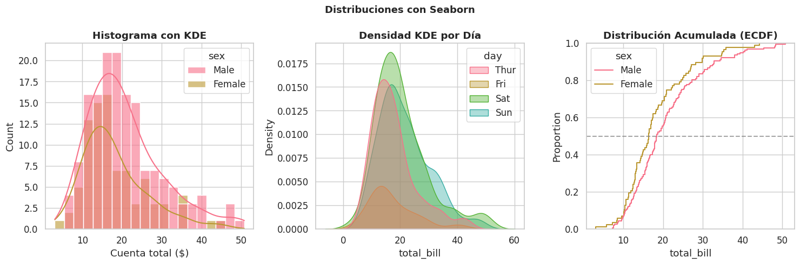
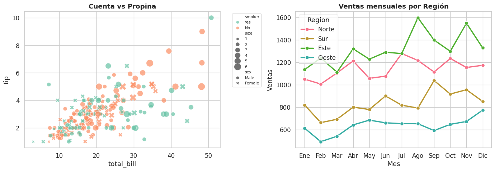
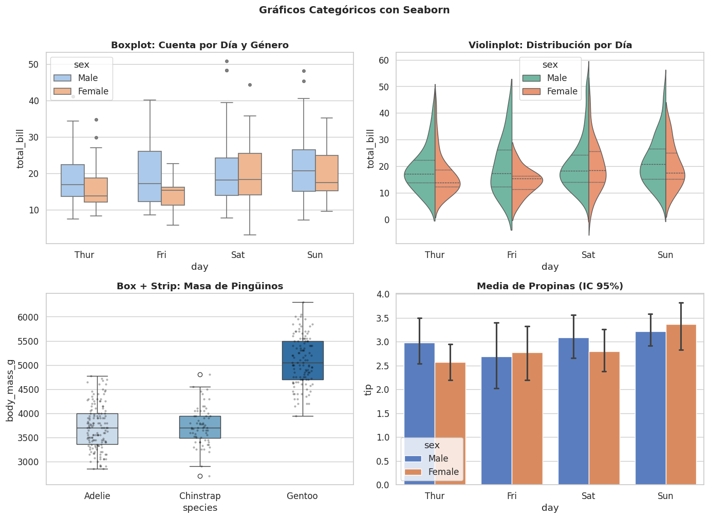
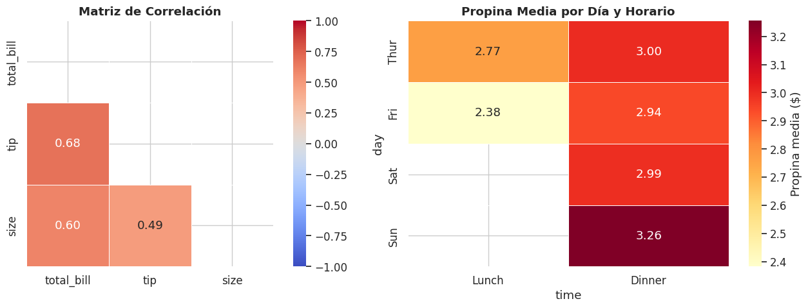
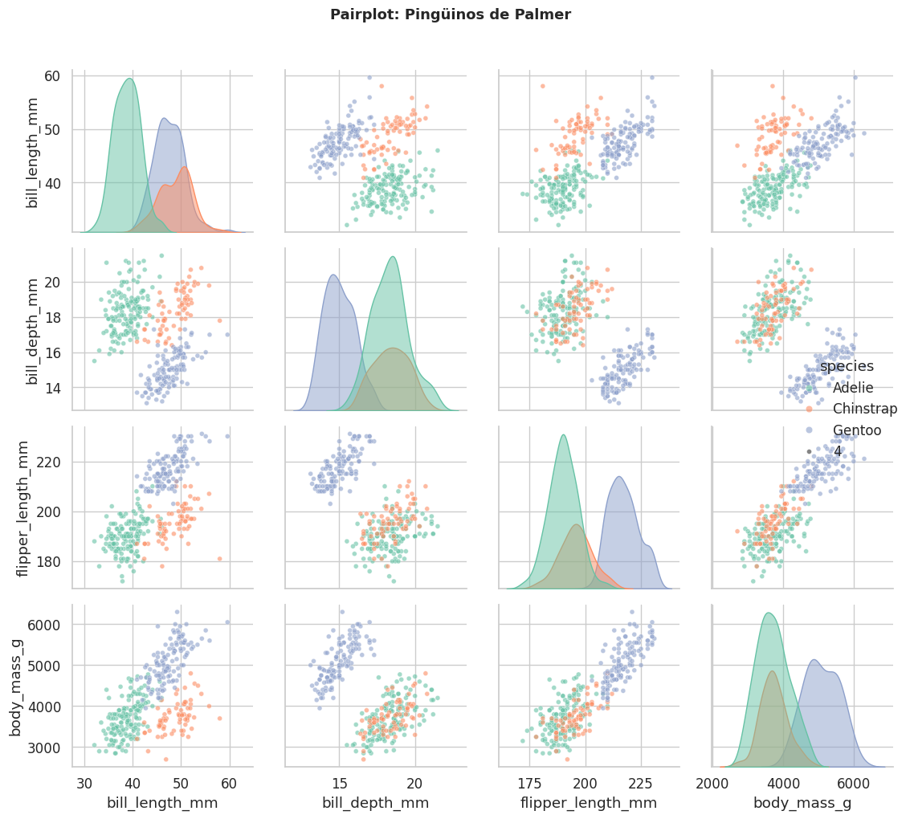

1.3.5 Seaborn — Fundamentos#
Seaborn es una biblioteca estadística construida sobre Matplotlib. Produce gráficos hermosos con muy poco código e integra directamente con Pandas.
Característica |
Matplotlib |
Seaborn |
|---|---|---|
Nivel de abstracción |
Bajo |
Alto |
Integración Pandas |
Manual |
Nativa |
Estética por defecto |
Básica |
Lista para publicar |
Gráficos estadísticos |
Manual |
Incorporados |
import seaborn as sns
# seaborn → la biblioteca completa
# as sns → alias estándar universal
import matplotlib.pyplot as plt
# Siempre importamos matplotlib:
# Seaborn lo usa internamente y necesitamos plt.show()
import pandas as pd
import numpy as np
sns.set_theme(
style='whitegrid', # fondo: 'white','whitegrid','dark','darkgrid','ticks'
palette='husl', # paleta de colores por defecto
font_scale=1.1) # escala de todas las fuentes (multiplicador)
# Datasets incluidos en Seaborn (perfectos para practicar)
tips = sns.load_dataset('tips') # propinas en restaurante
iris = sns.load_dataset('iris') # medidas de flores
penguins = sns.load_dataset('penguins') # pingüinos de Palmer
print('Dataset tips:')
print(tips.head())
print(f'Columnas: {list(tips.columns)}')
print(f'Shape: {tips.shape}')
Dataset tips:
total_bill tip sex smoker day time size
0 16.99 1.01 Female No Sun Dinner 2
1 10.34 1.66 Male No Sun Dinner 3
2 21.01 3.50 Male No Sun Dinner 3
3 23.68 3.31 Male No Sun Dinner 2
4 24.59 3.61 Female No Sun Dinner 4
Columnas: ['total_bill', 'tip', 'sex', 'smoker', 'day', 'time', 'size']
Shape: (244, 7)
3.1 Distribuciones#
fig, axes = plt.subplots(1, 3, figsize=(15, 5))
# histplot — histograma mejorado
sns.histplot(
data=tips, # el DataFrame
x='total_bill', # columna para el eje X
hue='sex', # colorear por categoría
# 'hue' es uno de los parámetros más poderosos de Seaborn
kde=True, # True = superpone curva de densidad (KDE)
bins=20,
alpha=0.6,
ax=axes[0]) # en qué Axes dibujar
axes[0].set_title('Histograma con KDE', fontweight='bold')
axes[0].set_xlabel('Cuenta total ($)')
# kdeplot — curva de densidad (Kernel Density Estimation)
# KDE es una versión suavizada del histograma
# Estima la densidad de probabilidad de los datos
sns.kdeplot(
data=tips,
x='total_bill',
hue='day',
fill=True, # rellenar el área bajo la curva
alpha=0.4,
bw_adjust=0.8, # ancho de banda del suavizado
# < 1 → más detalle | > 1 → más suave
ax=axes[1])
axes[1].set_title('Densidad KDE por Día', fontweight='bold')
# ecdfplot — distribución acumulada empírica
# ECDF(x) = fracción de datos MENORES que x
# Ej: ECDF(25)=0.7 → el 70% de las cuentas son < $25
sns.ecdfplot(
data=tips,
x='total_bill',
hue='sex',
ax=axes[2])
axes[2].set_title('Distribución Acumulada (ECDF)', fontweight='bold')
axes[2].axhline(0.5, color='gray', linestyle='--', alpha=0.7, label='Mediana')
plt.suptitle('Distribuciones con Seaborn', fontsize=13, fontweight='bold')
plt.tight_layout()
plt.show()

3.2 Gráficos relacionales#
fig, axes = plt.subplots(1, 2, figsize=(14, 5))
# scatterplot
sns.scatterplot(
data=tips,
x='total_bill',
y='tip',
hue='smoker', # color por categoría
style='sex', # forma del marcador por categoría
size='size', # tamaño del marcador por variable numérica
sizes=(30, 200), # rango de tamaños (mínimo, máximo) en puntos²
alpha=0.7,
palette='Set2',
ax=axes[0])
axes[0].set_title('Cuenta vs Propina', fontweight='bold')
axes[0].legend(bbox_to_anchor=(1.05, 1), loc='upper left', fontsize=8)
# bbox_to_anchor → coloca la leyenda FUERA del gráfico a la derecha
# lineplot — línea con intervalo de confianza automático
# Cuando hay múltiples y por cada x, muestra la MEDIA + IC 95%
np.random.seed(42)
meses = list(range(1, 13)) * 4
region = ['Norte']*12 + ['Sur']*12 + ['Este']*12 + ['Oeste']*12
vts = ([1000 + np.random.randn()*100 + i*20 for i in range(12)] +
[800 + np.random.randn()*80 + i*15 for i in range(12)] +
[1200 + np.random.randn()*120 + i*25 for i in range(12)] +
[600 + np.random.randn()*60 + i*10 for i in range(12)])
df_v = pd.DataFrame({'Mes':meses,'Region':region,'Ventas':vts})
sns.lineplot(
data=df_v, x='Mes', y='Ventas', hue='Region',
linewidth=2.5, marker='o', markersize=7,
dashes=False, # False = todas las líneas sólidas
ax=axes[1])
axes[1].set_title('Ventas mensuales por Región', fontweight='bold')
axes[1].set_xticks(range(1, 13))
axes[1].set_xticklabels(['Ene','Feb','Mar','Abr','May','Jun',
'Jul','Ago','Sep','Oct','Nov','Dic'])
plt.tight_layout()
plt.show()

3.3 Gráficos categóricos#
fig, axes = plt.subplots(2, 2, figsize=(14, 10))
# boxplot
sns.boxplot(
data=tips, x='day', y='total_bill', hue='sex',
palette='pastel', width=0.6, linewidth=1.2,
flierprops={'marker':'o','markerfacecolor':'gray','markersize':4},
# flierprops → propiedades de los puntos atípicos (outliers)
ax=axes[0, 0])
axes[0, 0].set_title('Boxplot: Cuenta por Día y Género', fontweight='bold')
# violinplot — combina boxplot con curva KDE
# Muestra la distribución completa, no solo los cuartiles
sns.violinplot(
data=tips, x='day', y='total_bill', hue='sex',
split=True, # True = divide el violín por las 2 categorías de hue
inner='quart', # qué mostrar dentro:
# 'box'=boxplot | 'quart'=cuartiles | 'point'=puntos | None=nada
palette='Set2', linewidth=1,
ax=axes[0, 1])
axes[0, 1].set_title('Violinplot: Distribución por Día', fontweight='bold')
# Box + Strip superpuestos (técnica avanzada)
# Muestra datos individuales Y el resumen estadístico
sns.boxplot(data=penguins.dropna(), x='species', y='body_mass_g',
palette='Blues', width=0.4, ax=axes[1, 0])
sns.stripplot(
data=penguins.dropna(), x='species', y='body_mass_g',
color='black', alpha=0.3, size=3,
jitter=True, # jitter → añade ruido horizontal para ver puntos superpuestos
ax=axes[1, 0])
axes[1, 0].set_title('Box + Strip: Masa de Pingüinos', fontweight='bold')
# barplot — muestra la MEDIA con intervalo de confianza 95%
# Diferente a plt.bar() que muestra valores directos
sns.barplot(
data=tips, x='day', y='tip', hue='sex',
palette='muted',
capsize=0.1, # tamaño de los sombreros en las barras de error
errorbar='ci', # tipo de barra: 'ci'=IC | 'sd'=desv. estándar
ax=axes[1, 1])
axes[1, 1].set_title('Media de Propinas (IC 95%)', fontweight='bold')
plt.suptitle('Gráficos Categóricos con Seaborn', fontsize=14, fontweight='bold', y=1.01)
plt.tight_layout()
plt.show()
/tmp/ipykernel_374/22761722.py:25: FutureWarning:
Passing `palette` without assigning `hue` is deprecated and will be removed in v0.14.0. Assign the `x` variable to `hue` and set `legend=False` for the same effect.
sns.boxplot(data=penguins.dropna(), x='species', y='body_mass_g',

3.4 Heatmap#
correlacion = tips.select_dtypes(include='number').corr()
# corr() → correlación de Pearson entre columnas numéricas
# Rango: -1 (inversa perfecta) a +1 (directa perfecta)
# select_dtypes(include='number') → solo columnas numéricas
fig, axes = plt.subplots(1, 2, figsize=(14, 5))
mask = np.triu(np.ones_like(correlacion, dtype=bool))
# np.triu() → triángulo SUPERIOR de la matriz (con diagonal)
# np.ones_like → matriz de unos del mismo tamaño
# Combinados: máscara para ocultar la mitad superior (idéntica a la inferior)
sns.heatmap(
correlacion,
mask=mask, # True = ocultar esa celda
annot=True, # True = muestra el valor en cada celda
fmt='.2f', # formato: 2 decimales
cmap='coolwarm', # azul(neg) → blanco(0) → rojo(pos)
vmin=-1, vmax=1, # rango fijo de la escala
center=0, # valor central del colormap
linewidths=0.5,
linecolor='white',
square=True, # True = celdas cuadradas
ax=axes[0])
axes[0].set_title('Matriz de Correlación', fontweight='bold')
pivot = tips.pivot_table(values='tip', index='day',
columns='time', aggfunc='mean')
# pivot_table → tabla dinámica
# aggfunc='mean' → función de agregación | otras: 'sum','count','median'
sns.heatmap(pivot, annot=True, fmt='.2f', cmap='YlOrRd',
linewidths=0.5, linecolor='white',
cbar_kws={'label':'Propina media ($)'},
ax=axes[1])
axes[1].set_title('Propina Media por Día y Horario', fontweight='bold')
plt.tight_layout()
plt.show()
/tmp/ipykernel_374/3092849961.py:27: FutureWarning: The default value of observed=False is deprecated and will change to observed=True in a future version of pandas. Specify observed=False to silence this warning and retain the current behavior
pivot = tips.pivot_table(values='tip', index='day',

3.5 Pairplot — visualización multivariada#
# pairplot → MATRIZ de gráficos
# Diagonal → distribución de cada variable
# Fuera diagonal → scatter de cada par de variables
g = sns.pairplot(
penguins.dropna(),
hue='species',
diag_kind='kde', # tipo en diagonal: 'hist' o 'kde'
plot_kws={'alpha':0.6,'size':4},
diag_kws={'fill':True,'alpha':0.5},
palette='Set2',
corner=False) # False=matriz completa | True=solo triángulo inferior
g.figure.suptitle('Pairplot: Pingüinos de Palmer', fontsize=13, fontweight='bold', y=1.02)
plt.tight_layout()
plt.show()
